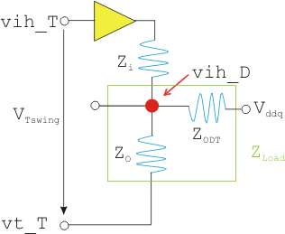

Level configuration for memory devices operating with ODT
To calculate the level configuration for a memory device without ODT similar steps are required as without ODT. Furthermore you need to consider the ODT resistance as additional load in the signal path.
1 EQNSET 4 "HSM3600" # with ODT 2 3 MODECONTEXT "HSM3600" 4 5 SPECS 6 Vddq [V] 7 swing_device [V] # applied around Vref 8 Z_ODT [Ohm] # ODT impedance 9 VDQo_offset [V] # manual threshold offset 10 11 EQUATIONS # put depend specs here 12 Vref = 0.7*Vddq 13 Z_T = 50 # V93000 transmission line impedance 14 Z_load = (Z_T*Z_ODT)/(Z_T+Z_ODT) 15 vih_D = Vref + swing_device/2 # device high input level 16 vt_T = Vddq 17 # high level programmed @tester to match device high input level 18 vih_T = (vih_D-Z_T/(2*Z_ODT+Z_T)*Vddq)*(Z_T+Z_load)/Z_load - vt_T 19 # low level programmed @tester to match device low input level 20 vil_T = vih_T - (Z_load+Z_T)/Z_load*swing_device 21 22 LEVELSET 1 "basic" 23 ... 24 25 # dual TL 26 PINS DQi 27 vih=vih_T 28 vil=vil_T 29 30 # dual TL 31 PINS DQo 32 term on 33 vt=vt_T 34 vth=vth_T + VDQo_offset 35
From a logical perspective this level configuration can be transferred into a "loaded voltage divider" (see following figure).

The value for vih_T can be determined by transforming the "loaded voltage divider" formula.
From the device spec, you derive:
Vih_D = Vref + swing_device / 2
Assumptions:
ZT = Zi = Zo ZLoad = ZT x ZODT / (ZT + ZODT)
Using the superposition method you calculate:
vih_D = vih_T x ZLoad / (ZT + ZLoad) + vt_T x (ZLoad / ZT + ZLoad) +
Vddq x ZT / 2 / (ZT /2 + ZODT)
Transformation to vih_T gives:
vih_T = ((vih_D - ZT / (ZT + 2xZODT) x (ZT + ZLoad) / ZLoad )- vt_T
For the low driver voltage vil_T use:
vil_T = vih_T - (ZLoad + ZT) / ZLoad x swing_device
The variable names used in the above formula are described in the table below.
Variable Name |
Description |
|---|---|
vil_T |
Input low voltage on test system side |
vih_D |
Input high voltage at device side |
vih_T |
Input high voltage on test system side |
vt_T |
Termination voltage on test system side |
swing_device |
Expected voltage swing between logic high and logic low on device side |
ZT |
Input/output resistor of test system |
ZODT |
On die termination resistor |